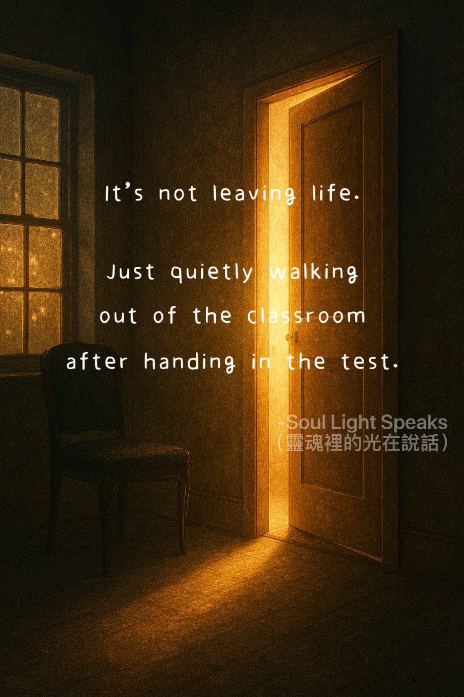

It is not leaving life.
Just quietly walking out of the classroom
after handing in the test.
Just quietly walking out of the classroom
after handing in the test.
Not everyone who leaves life early is trying to escape.
Some people have simply carried their pain for so long
that they forget why they came here in the first place.
Sometimes a life lesson feels unfinished.
From a soul perspective, it is not always a mistake —
sometimes it is simply a lesson that will continue somewhere else.
It does not mean they lost.
Sometimes it simply means they were too tired.
A soul may continue learning somewhere else,
picking up the story where it paused.
This is not meant to encourage leaving early.
It is simply a reminder to look with compassion.
Some people were not weak.
They were simply holding on until their spirit reached its limit.